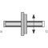
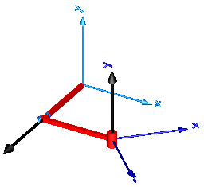

PlanarPlanar joint (3 degrees-of-freedom, 6 potential states) |

|
Diagram
{kind=link}
Information
This information is part of the Modelica Standard Library maintained by the Modelica Association.
Joint where frame_b can move in a plane and can rotate around an axis orthogonal to the plane. The plane is defined by vector n which is perpendicular to the plane and by vector n_x, which points in the direction of the x-axis of the plane. frame_a and frame_b coincide when s_x=prismatic_x.s=0, s_y=prismatic_y.s=0 and phi=revolute.phi=0. This joint has the following potential states:
- the relative distance s_x = prismatic_x.s [m] along axis n_x,
- the relative distance s_y = prismatic_y.s [m] along axis n_y = cross(n,n_x),
- the relative angle phi = revolute.phi [rad] around axis n,
- the relative velocity v_x (= der(s_x)).
- the relative velocity v_y (= der(s_y)).
- the relative angular velocity w (= der(phi))
They are used as candidates for automatic selection of states from the tool. This may be enforced by setting "stateSelect=StateSelect.always" in the Advanced menu. The states are usually selected automatically. In certain situations, especially when closed kinematic loops are present, it might be slightly more efficient, when using the "StateSelect.always" setting.
In the following figure the animation of a planar joint is shown. The light blue coordinate system is frame_a and the dark blue coordinate system is frame_b of the joint. The black arrows are parameter vectors "n" and "n_x" (here: n = {0,1,0}, n_x = {0,0,1}, s_x.start = 0.5, s_y.start = 0.5, phi.start = 45o).

Parameters (8)
| animation |
Value: true Type: Boolean Description: = true, if animation shall be enabled |
|---|---|
| n |
Value: {0, 0, 1} Type: Axis Description: Axis orthogonal to unconstrained plane, resolved in frame_a (= same as in frame_b) |
| n_x |
Value: {1, 0, 0} Type: Axis Description: Vector in direction of x-axis of plane, resolved in frame_a (n_x shall be orthogonal to n) |
| cylinderLength |
Value: world.defaultJointLength Type: Distance (m) Description: Length of revolute cylinder |
| cylinderDiameter |
Value: world.defaultJointWidth Type: Distance (m) Description: Diameter of revolute cylinder |
| boxWidth |
Value: 0.3 * cylinderDiameter Type: Distance (m) Description: Width of prismatic joint boxes |
| boxHeight |
Value: boxWidth Type: Distance (m) Description: Height of prismatic joint boxes |
| stateSelect |
Value: StateSelect.prefer Type: StateSelect Description: Priority to use joint coordinates (s_x, s_y, phi, v_x, v_y, w) as states |
Inputs (2)
Connectors (2)
Components (7)
| world |
Type: World |
|
|---|---|---|
| prismatic_x |
Type: Prismatic |
|
| prismatic_y |
Type: Prismatic |
|
| revolute |
Type: Revolute |
|
| box_x |
Type: Shape[ndim] |
|
| box_y |
Type: Shape[ndim] |
|
| cylinder |
Type: Shape[ndim] |